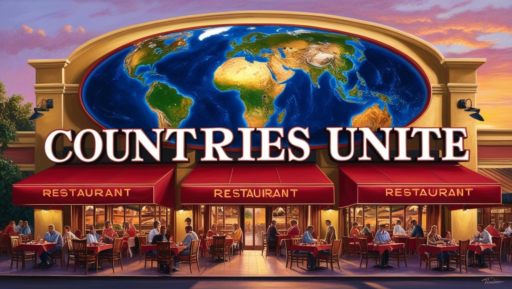
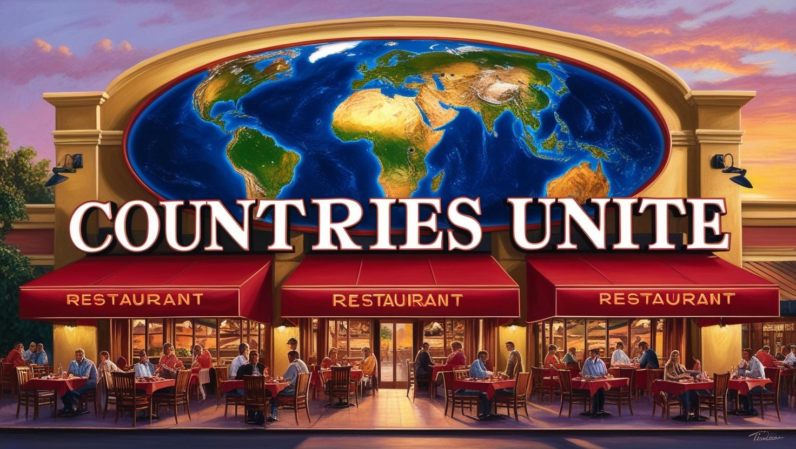
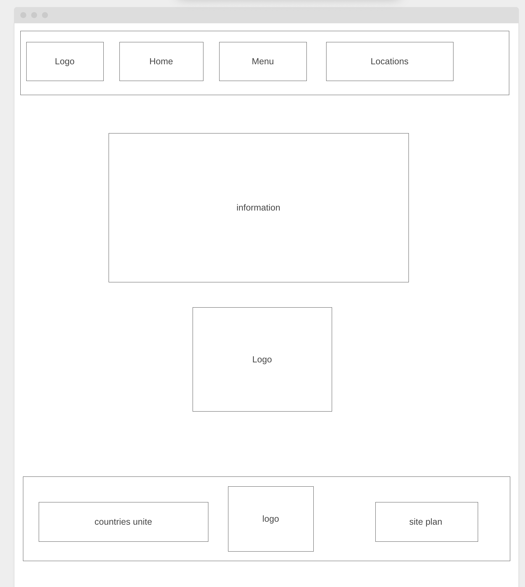

Overview
Purpose
the site for a fictional food resturaunt
Audience
Customers of Countries Unite
Branding
Website Logo

Style Guide
Color Palette
| Primary | Secondary | Accent 1 | Accent 2 |
|---|---|---|---|
Typography
Heading Font: Iansui
Paragraph Font: Rock_Salt
Normal paragraph example
Countries Unite is a resturaunt food from all around the world, including a selection of food always around, and another selection of food from a rotating food collection with a different group of countries each month
Colored paragraph example
Every week there is also a spotlight country with a single dish from the country that is served that week as a special
Navigation
Site Map
Content
Home page
Countries Unite is a place where you can try different dishes from around the world, with multiple different options such as from a selection of foods we always have around, and another from a rotating menu with different foods each month. Our goal is to allow people to try different food from all over the world. The food is prepared by chefs working in the resturaunt
Images for the Home page
Menu
Each location has a different rotating menu, except for locations based in the united states. Current main menu: Bacon Cheeseburger (United States), Cheese Fries (United States) Bean N Cheese Burrito (Mexico), Tacos (Mexico) Spaghetti and Meatballs (Italy) Pepperoni Pizza (Italy) Fettuccine Alfredo (Italy) Fish and Chips (UK) Current Breakfast Menu: Make your own Pancakes (United States and Greece) make your own Waffles (United States) Full English Breakfast (UK) Brekkie (Australia) Desayuno tradicional de Guatemala (Guatemala) Current Rotation Menu: Ratatouille (France) Gazpacho (Spain) Orange Chicken (China) Sancocho (Panama) Gyro (Greece)
Images for the Page 2


Locations
We have 10 open locations currently, with many more on the way. Our current locations are 139 Burger St, New York, New York, 189 Fry Ave, Las Vegas, Nevada, 893 Shake Ln, Washington D.C., 349 Bacon St. Los Angeles, California, 345 Chips Ln, Toronto, Canada, 490 Pork Rd. London, UK, 455 Ranch St, Hamburg, Germany, Tamale St, Guatemala City, Guatemala, Sushi Ave, Tokyo, Japan, and Pasta Ln, Rome, Italy. Each location has their own hours and own rotating menu, along with the country the location is in being on the main menu of the location. Most resteraunts have the food prepared as it is traditionally prepared, but some locations in different countries have some exceptions.
Images for the Page 3
 



Wireframes
Create three wireframes for your site. One for each page and list them here
Home

Menu
Locations